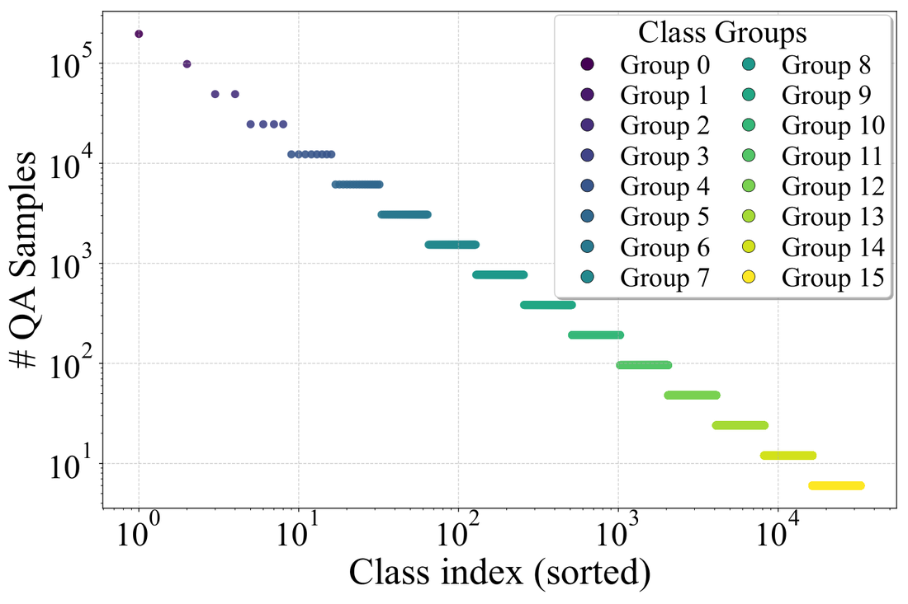

Muon在LLM训练上一致比Adam快约2倍，但机制一直不清楚。这篇论文通过联想记忆的角度揭开机制：先消融Muon优化的transformer组件，揭示VO注意力权重和FFN（LLM的联想记忆参数）是Muon优势的主要来源。
然后解释Muon在现实语料（本质重尾分布，少数尾类远不常见）上的优势：其更新规则一致产生比Adam更各向同性的奇异谱，从而在重尾数据上更有效优化尾类。
Muon是矩阵参数优化器，核心创新是用归一化正交因子的和替换原始梯度：可解释为相对谱范数的最陡下降。但谱范数最陡下降并不能解释为何应胜过向量范数（Adam）的优化。
我们问第一个问题：哪些transformer组件从Muon的矩阵范数优化中获益最多？ 对160M NanoGPT（FineWeb验证损失）做两阶段实验：独立块设置（一次只对单块用Muon、其余Adam，覆盖QKV + O投影和Win/Wout）和组合配置（对最具影响子集用Muon，看部分应用能否恢复全Muon）。
核心洞察：VO和FFN块（模型的主要联想记忆存储，Geva 2020、Bietti 2023）是Muon优化策略的主要受益者。
独立块实验（图1、表1）：VO权重（V、O）在Muon下的增益远大于QK权重（Q、K）。仅对V或仅对O用Muon就比QK得到大得多增益；两者中O在gated设置相当、non-gated更好。FFN里Win、Wgate、Wout都受益，Wout比Win增益更强。

组合配置：VO+FFN用Muon（QK用Adam）已紧密追踪：接近恢复：全Muon轨迹，说明对QK应用Muon对整体性能贡献很小。这不是参数计数的平凡结果：QK和VO参数相同，但VO显著更有影响。
线性联想记忆特别适合Muon的更新机制。记忆矩阵W可表示为外积和（对象嵌入 × 主体嵌入转置）。Muon更新（无动量）对梯度做SVD、形成归一化正交因子：对所有「正交」方向的事实以相同速率更新。奇异值编码训练数据中知识的频率，所以Muon能统一学习频繁和不频繁的事实。
| 配置 | Non-gated FFN | Gated FFN |
|---|---|---|
| Muon(全部attn+FFN) | 3.5654 | 3.5125 |
| 全部Adam | 3.9242 | 3.8837 |
| Muon(QK attn)& Adam(VO+FFN) | 3.8925 | 3.8518 |
| Muon(VO attn)& Adam(QK+FFN) | 3.7644 | 3.6874 |
| Muon(仅V)& Adam(其余) | 3.8301 | 3.7482 |
| Muon(仅O)& Adam(其余) | 3.7712 | 3.7604 |
| Muon(VO+FFN)& Adam(QK) | 3.5858 | 3.5312 |
| Muon(仅V+FFN)& Adam(QKO) | 3.6702 | 3.7185 |
| Muon(仅O+FFN)& Adam(QKV) | 3.6042 | 3.5634 |
为验证Muon跨方向更均衡地塑造权重矩阵，做谱分析。定义归一化奇异能量分布（各奇异方向的能量占比），用四个指标刻画各向同性：归一化SVD熵（能量分布均匀度，越高越各向同性）、有效秩（能量分布的困惑度）、Top-k能量分数（前k主成分能量集中度，越低越各向同性）、特征值分位数比（Q75/Q25，对极端值鲁棒，越低越均匀）。
谱分析（10个随机种子平均）显示Muon相对Adam系统重塑学习权重：① gated/ungated两种架构里Muon从训练开始就产生比Adam更各向同性的奇异谱，而Adam的各向同性在优化过程中显著波动；② Muon的各向同性跨随机初始化稳定（误差棒可忽略），Adam对初始化高度敏感。
Muon也学到比Adam更各向同性的QK权重，但QK不是线性联想记忆机制的一部分、不预期从权重各向同性受益。
与Liu 2025的谱分析不同：我们把参数按联想记忆分解（Liu聚合模糊了驱动行为的关键组件）、研究了Adam在随机初始化下的不稳定性（Section 5理论建立）、聚焦稠密架构（Liu聚焦MoE）。
用知识密集型QA任务检验联想记忆的整体学习效果：合成的传记信息数据（20万个体，名/生日/公司），控制每个个体在训练集出现频率服从幂律分布（图3a）诱导不同学习难度。160M NanoGPT用First Token Accuracy（FTA）评估。
高频率（head）类所有优化器都好：Muon、Adam、甚至SGD+Momentum快速到近乎完美准确率。与重尾分布先验工作一致，Adam相对SGD保持清晰优势（SGD在尾类挣扎）。关键发现：Muon大幅优于Adam在低频（tail）数据，跨所有频率更快更均匀收敛。Muon更紧的误差棒反映更低方差、更稳定学习过程。
混合配置澄清Muon最重要处：对VO+FFN用Muon（QK用Adam）在稀类上强增益、显著缩小head-tail差距；只对QK用Muon（VO+FFN用Adam）只有限改进：印证Observation 1：VO+FFN集中了模型联想记忆、是最有效目标集。
为补充经验观察，分析Adam、Muon、gd（baseline）在捕获核心动态的抽象上。保留联想记忆和语言模型头、把前置模块替换为给定特征嵌入。
K个三元组（主体-关系-对象），嵌入到矩阵E和E~ 的列。线性联想记忆W以softmax预测各对象的概率，目标是最小化种群交叉熵损失（第k个三元组的出现频率）。gd用梯度更新；Adam（关EMA）退化为sign-gd；Muon禁用动量、用归一化SVD。
两个嵌入设定：support-decoupled（不同嵌入非零项支持集不相交）和support-coupled（支持可重叠）。用最大概率差距 Δ(W)（K个知识项中正确类概率的最大最小之差）量化跨K个知识项的学习不平衡。
两协议（一步/多步）和嵌入下：gd和Muon行为一致：gd显著不平衡、Muon跨项更均衡；sign-gd不稳定（coupled嵌入像gd、decoupled像Muon）。支撑向量在Llama3-8b验证接近正交（角度近90°）。
定义指标 ϱ(ε)：在至少一个知识项达到正确类概率1-ε 的条件下、所有知识项中最小的正确类概率。ϱ 接近1-ε 表示跨事实均衡学习，接近0表示不平衡。
gd：ϱ(ε) 至多为K的 (r-1) 次方量级（含 ε 的 -r次方因子），其中指数r(α,β) 小于1、度量数据不平衡度（r等于1完全平衡、r远小于1严重不平衡）。gd高度敏感于数据不平衡：分布越不平衡，正确类概率的离散越大、最小正确概率越小。
Muon：任意嵌入下最差正确类概率达到1-ε·(1+O(logK/K))（K增大趋近1-ε），且初始更新近似等于 -E~ 乘E转置（加O(1/K) 级扰动）。Muon对数据不平衡免疫地均衡学习，最差三元组与最好三元组正确概率相当。Muon更新规则对所有更新方向分配相等强度（奇异值近一致）。
Adam：性能对嵌入不稳定。嵌入support-decoupled（如E~=E=I）时sign算子不破坏结构、可均衡；嵌入重叠时（现实重要情形）sign引入不平衡：最差优化三元组正确概率仅O(ε 的-0.7次方·K的-0.3次方)，指数 (0.3, 0.7) 是Adam更新在特定嵌入下固有的、与 α/β 无关。且Adam更新表现显著谱衰减（最小奇异值可< 最大值的 25%），解释 Observation 2 的差各向同性。
Theorem 5.4：多步Muon同样奇异地达成均衡（ϱ 同样下界、每步更新近各向同性）：验证Adam元素级归一化破坏梯度的矩阵结构，而Muon的对齐结构使它免疫。
通过消融Muon对不同transformer组件的影响、并把结果关联到联想记忆的均衡学习，我们总结：Muon更新规则与线性联想记忆的外积结构对齐，使其在重尾分布下对尾类更均衡有效地学习。
直观上这一性质可能超越外积延伸高阶张量积：未来令人兴奋的方向。
参考：https://arxiv.org/html/2509.26030v2